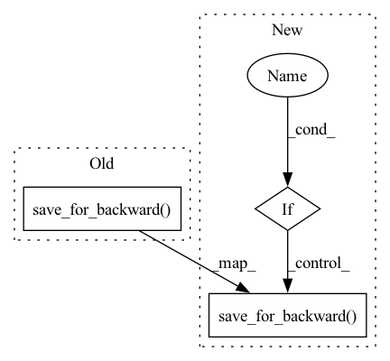

Pattern ID :34486

Before Change
BLOCK_SIZE = BLOCK_SIZE,
)
ctx.save_for_backward(y)
return y.view(*shape)
@classmethod
def backward(self, ctx, grad_probs):
After Change
BLOCK_SIZE = BLOCK_SIZE,
)
if x.requires_grad:
ctx.save_for_backward(y)
return y.view(*shape)
@classmethod
def backward(self, ctx, grad_probs):
In pattern: SUPERPATTERN
Frequency: 4
Non-data size: 3
Instances
Fragment ID: 99161241
Project Name: lucidrains/triton-transformer
Commit Name: 313314dd008fb978a7652743dbccda21c3a7a876
Time: 2021-09-29
Author: lucidrains@gmail.com
File Name: triton_transformer/triton_transformer.py
M Class Name: _softmax
N Class Name: _softmax
M Method Name: forward(3)
N Method Name: forward(3)
M Parent Class: autograd.Function
N Parent Class: autograd.Function
M File Name: triton_transformer/triton_transformer.py
N File Name: triton_transformer/triton_transformer.py
M Start Line: 326
M End Line: 326
N Start Line: 309
N End Line: 329
'>
Before Change
ctx.had_cuda_in_fwd = True
ctx.fwd_gpu_devices, ctx.fwd_gpu_states = get_device_states(
*args)
ctx.save_for_backward(*args)
with torch.no_grad():
outputs = run_function(*args)
// logging.info("checkpoint FWD")
return outputs
After Change
ctx.fwd_gpu_devices, ctx.fwd_gpu_states = get_device_states(
*args)
if False:
// Note 改变了run_function和save_for_backward的相对顺序
inputs_cuda = move_to_device(args, torch.device("cuda:0"))
with torch.no_grad():
outputs = run_function(*inputs_cuda)
// logging.info("checkpoint FWD")
del inputs_cuda
inputs = []
for i, arg in enumerate(args):
item = arg
item.data = arg.data.cpu()
// item.requires_grad = arg.requires_grad
inputs.append(item)
print("FWD inputs ", inputs)
ctx.save_for_backward(*tuple(inputs))
else:
ctx.save_for_backward(*args)
with torch.no_grad():
outputs = run_function(*args)
return outputs
'>
Fragment ID: 99161243
Project Name: tencent/patrickstar
Commit Name: 4671fd1e3e3fa986f041ed182b3e9f3bd5626fad
Time: 2021-05-13
Author: jiaruifang@tencent.com
File Name: checkpoint/torch_checkpoint.py
M Class Name: CheckpointFunction
N Class Name: CheckpointFunction
M Method Name: forward(3)
N Method Name: forward(3)
M Parent Class: torch.autograd.Function
N Parent Class: torch.autograd.Function
M File Name: checkpoint/torch_checkpoint.py
N File Name: checkpoint/torch_checkpoint.py
M Start Line: 98
M End Line: 102
N Start Line: 114
N End Line: 135
'>
Before Change
BLOCK_SIZE = BLOCK_SIZE,
)
ctx.save_for_backward(scaled_x, normed_x, gamma, inv_var)
return out.view(*shape)
@classmethod
def backward(cls, ctx, dy):
After Change
out = torch.empty_like(x)
if training:
normed_x = torch.empty_like(x)
scaled_x = torch.empty_like(x)
inv_var = torch.empty_like(x)
layernorm_kernel_forward_training[(n_rows,)](
out,
normed_x,
scaled_x,
inv_var,
x,
expanded_gamma,
expanded_beta,
x.stride(0),
expanded_gamma.stride(0),
expanded_beta.stride(0),
out.stride(0),
normed_x.stride(0),
scaled_x.stride(0),
inv_var.stride(0),
n_cols,
eps,
num_warps = num_warps,
BLOCK_SIZE = BLOCK_SIZE,
)
ctx.save_for_backward(scaled_x, normed_x, gamma, inv_var)
else:
layernorm_kernel_forward_inference[(n_rows,)](
out,
x,
'>
Fragment ID: 99161245
Project Name: lucidrains/triton-transformer
Commit Name: 254d6519fceb09bdf8956f944fbb3b4a84d8de5e
Time: 2021-09-22
Author: lucidrains@gmail.com
File Name: triton_transformer/triton_transformer.py
M Class Name: _layernorm
N Class Name: _layernorm
M Method Name: forward(7)
N Method Name: forward(6)
M Parent Class: autograd.Function
N Parent Class: autograd.Function
M File Name: triton_transformer/triton_transformer.py
N File Name: triton_transformer/triton_transformer.py
M Start Line: 393
M End Line: 418
N Start Line: 423
N End Line: 479
'>
Before Change
@classmethod
def forward(self, ctx, x, w, b):
o = triton_bmm_with_bias(x, w, b, activation = relu_squared_activation)
ctx.save_for_backward(x, w, o)
return o
@classmethod
def backward(self, ctx, dy):
After Change
@classmethod
def forward(self, ctx, x, w, b):
o = triton_bmm_with_bias(x, w, b, activation = relu_squared_activation)
if x.requires_grad:
ctx.save_for_backward(x, w, o)
return o
@classmethod
def backward(self, ctx, dy):
'>
Fragment ID: 99161246
Project Name: lucidrains/triton-transformer
Commit Name: 313314dd008fb978a7652743dbccda21c3a7a876
Time: 2021-09-29
Author: lucidrains@gmail.com
File Name: triton_transformer/triton_transformer.py
M Class Name: _relu_squared
N Class Name: _relu_squared
M Method Name: forward(5)
N Method Name: forward(5)
M Parent Class: autograd.Function
N Parent Class: autograd.Function
M File Name: triton_transformer/triton_transformer.py
N File Name: triton_transformer/triton_transformer.py
M Start Line: 214
M End Line: 214
N Start Line: 214
N End Line: 216